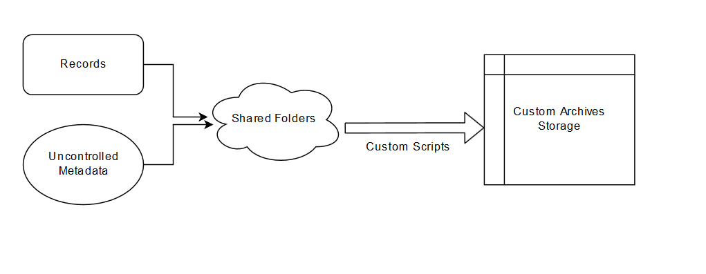
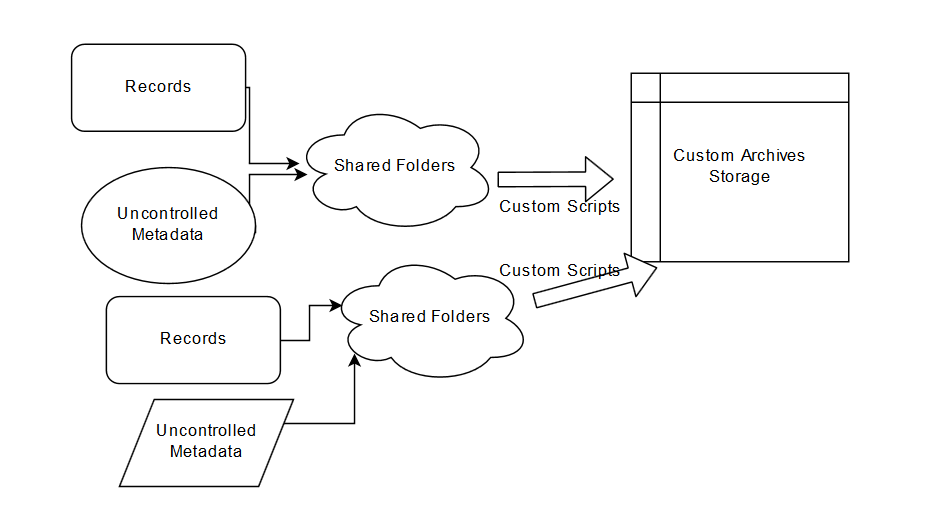
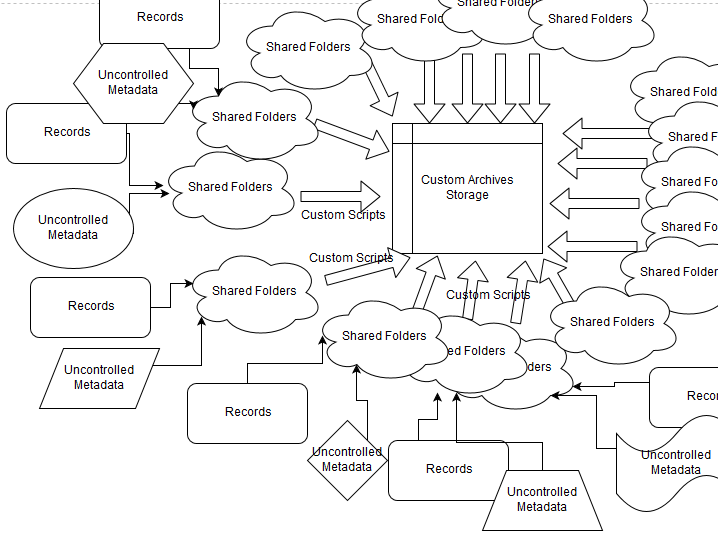
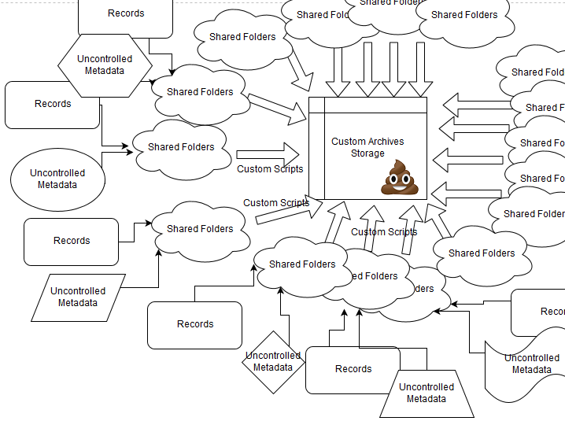
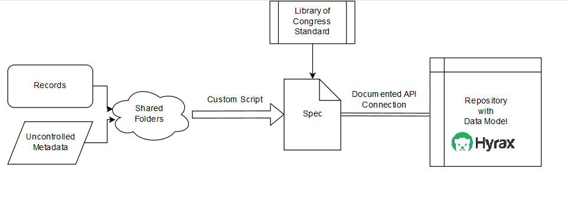
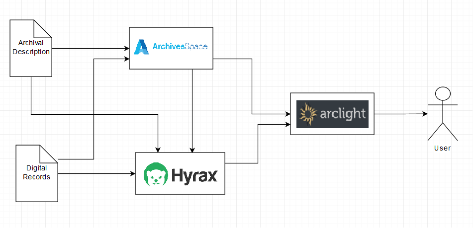

<!doctype html>
<html lang="en">
    <head>
        <meta charset="utf-8">
        <title>Espy Project</title>
        <link rel="stylesheet" href="css/reveal.css">
        <link rel="stylesheet" href="css/theme/moon2.css" id="theme">
        <!-- For syntax highlighting -->
        <link rel="stylesheet" href="lib/css/zenburn.css">

        <!-- If the query includes 'print-pdf', use the PDF print sheet -->
        <script>
          document.write( '<link rel="stylesheet" href="css/print/' + ( window.location.search.match( /print-pdf/gi ) ? 'pdf' : 'paper' ) + '.css" type="text/css" media="print">' );
        </script>
    </head>
    <body>

        <div class="reveal">
            <div class="slides"><section  data-markdown><script type="text/template">

<style>
#fLeft {float: left; max-width: 58%;}
#fRight {float: right; max-width: 38%;}
li {font-size: 30px !important; margin: 12px !important;}
</style>

## The Espy Project

#### Enabling New Access to Archival Materials

<br/>
<br/>
##### Gregory Wiedeman
##### University Archivist
##### University at Albany, SUNY
##### <a>@gregwiedeman</a>
</script></section><section  data-markdown><script type="text/template">
## National Death Penalty Archives at UAlbany

<div id="fLeft">

</div>
<div id="fRight">


</div>
</script></section><section  data-markdown><script type="text/template">

<div id="fLeft">
<h3>Watt Espy Papers</h3>
<ul>
<li>24,036 sides of index cards</li>
<br/>
<li>A 101,566 pages of reference materials
<ul>
<li>Copies of Correctional Records</li>
<li>Copies of newspapers and published sources</li>
<li>Written notes</li>
</ul>
</li>
</ul>
</div>
<div id="fRight">
	
</div>
</script></section><section  data-markdown><script type="text/template">

</script></section><section  data-markdown><script type="text/template">
<!-- .slide: data-background="http://library.albany.edu/sites/all/themes/New_UArchives/img/full/news1.jpg" -->
</script></section><section  data-markdown><script type="text/template">
#### Computational Analysis and the Death Penalty

* <i>Furman v. Georgia</i> (1972)
* <i>Gregg v. Georgia</i>, etc. (1976)
* Marvin Wolfgang and Marc Riedel Study (1973) and <i>Maxwell v. Bishop</i>
* David Baldus-led Georgia Study
* <i>McCleskey v. Kemp </i> (1987)
	* Found "racially disproportionate impact"
	* invalidated statistical analysis for 14th amendment
* <i>Batson v. Kentucky</i> (1986)
* <i>Miller-El v. Dretke</i> (2005)
</script></section><section  data-markdown><script type="text/template">
### Executions in the U.S. 1608-2002: The Espy File

* University of Alabama project funded by NSF (1984)
* Found over 15,000 executions by the state since Colonial Jamestown
	* Espy not confident in coding practices
	* Blackman and McLaughlin, “The Espy File on American Executions: User Beware” <i>Homicide Studies</i> 15(3) (2011)
* Inter-University Consortium for Political and Social Research (ICPSR)
	* They are nice
</script></section><section  data-markdown><script type="text/template">
### Larger Problems

* Archives typically do not provide this level of access
	* Don't have systems to support
* Collecting problems for University Archives
	* State retention schedule
	* "Decentralized" (mostly non-existent) records management
	* 18,000 student, 1,200+ faculty university
	* Need to demonstrate value to university offices
</script></section><section  data-markdown><script type="text/template">
<!-- .slide: data-background="img-iipc/minutes.png" -->
</script></section><section  data-markdown><script type="text/template">
<!-- .slide: data-background="img-iipc/undergradBulletin.png" -->
</script></section><section  data-markdown><script type="text/template">
<!-- .slide: data-background="img/applications1.png" -->
</script></section><section  data-markdown><script type="text/template">
<!-- .slide: data-background="img/applications2.png" -->
</script></section><section  data-markdown><script type="text/template">
## Establishing a Collecting Program


</script></section><section  data-markdown><script type="text/template">
## Establishing a Collecting Program


</script></section><section  data-markdown><script type="text/template">
## Establishing a Collecting Program


</script></section><section  data-markdown><script type="text/template">
## Establishing a Collecting Program


</script></section><section  data-markdown><script type="text/template">
## Maintenance

* Scripts break over time
	* No more ad-hoc approaches
	* No more XML data stores
* Network of well-maintained interoperable tools
</script></section><section  data-markdown><script type="text/template">
## API Access Allows Maintainable Workflows


</script></section><section  data-markdown><script type="text/template">
<!-- .slide: data-background="img/hyrax1.png" -->
</script></section><section  data-markdown><script type="text/template">
## Espy Metadata Creation Tool

* Samvera and Hyrax is Rails application
* "Ramp up" plan for repository implementation and maintenance
* Developed Espy Metadata Creation Tool
* Makes connections between 4 difference sources
	* Small Index Cards
	* Large Index Cards
	* Reference Material
	* Espy File data from ICPSR
* Create new Espy Records backed by Data Model
* Make the computer do the boring work
* Focus on intellectual process of metadata creation
</script></section><section  data-markdown><script type="text/template">
<!-- .slide: data-background="img/espy1.png" -->
</script></section><section  data-markdown><script type="text/template">
<!-- .slide: data-background="img/espy2.png" -->
</script></section><section  data-markdown><script type="text/template">
<!-- .slide: data-background="img/espy3.png" -->
</script></section><section  data-markdown><script type="text/template">
<div id="fLeft">
<h4>Metadata Matters</h4>
<ul>
<li>Espy File data demonstrated creators’ 
priorities, values, and mental framing 
that are inappropriate or conflict with 
our own</li>
<li>Occupation:
<ul>
<li>"Student"</li>
<li>"Banana Dealer"</li>
<li>"Beef Carrier"</li>
<li>"Goat Herder"</li>
<li>"Tiecutter"</li>
<li>"Tourist"</li>
</ul>
</li>
</ul>
</div>
<div id="fRight">
	
</div>
</script></section><section  data-markdown><script type="text/template">
<div id="fLeft">
<h4>Metadata Matters</h4>
<ul>
<li>Occupation:
<ul>
<li>"Armed robber"</li>
<li>"Asylum Escapee"</li>
<li>"Bandit"</li>
<li>"Criminal"</li>
<li>"Cult Leader"</li>
<li>"Gang Member"</li>
<li>"Lunatic"</li>
<li>"Male Nurse"</li>
<li>"Retarded"</li>
<li>"Slave"</li>
</ul>
</li>
</ul>
</div>
<div id="fRight">
	
</div>
</script></section><section  data-markdown><script type="text/template">
### Metadata Matters

* "Crime Committed" changed to "Crime Convicted"
* Race does not conform to an established standard
* General Data Improvements
	* Added Date of Conviction to Date of Execution
	* ISO dates
	* First and last name in individual fields
	* Altered Place of Execution and Jurisdiction
	* Sex to become Gender
	* Feedback welcome!
</script></section><section  data-markdown><script type="text/template">
<!-- .slide: data-background="img/linkedData.png" -->
</script></section><section  data-markdown><script type="text/template">
## Linked Data Problems

* Hard to find vocabularies with sufficient precision
* Create one?
	* Access to expertise, School of Criminal Justice, Advisory Board
* Issues with digital archival objects as well
* Archives have a fundamental mission conflict with linked data
	* Archives is a system to manage objects with minimal metadata
	* Archives offer information in context, not verifiable data
</script></section><section  data-markdown><script type="text/template">
## Access is Important

<video width="100%" height="100%" autoplay controls>
  <source src="scroll.webm" type="video/webm">
</video>
</script></section><section  data-markdown><script type="text/template">
## No More Finding Aids

* Need to demonstrate value to university offices
* Archives access is esoteric
	* Crypic signposts
	* "What Does Scope and Content MEAN???!" (Scheir, 2005, p.72)
* Archives have always been a compromise between usability and scale
</script></section><section  data-markdown><script type="text/template">
## An Interoperable Repository with APIs


</script></section><section  data-markdown><script type="text/template">
<!-- .slide: data-background="img/arclight1.png" -->
</script></section><section  data-markdown><script type="text/template">
<!-- .slide: data-background="img/arclight2.png" -->
</script></section><section  data-markdown><script type="text/template">
<!-- .slide: data-background="img/arclight3.png" -->
</script></section><section  data-markdown><script type="text/template">
<!-- .slide: data-background="img/hyrax2.png" -->
</script></section><section  data-markdown><script type="text/template">
<!-- .slide: data-background="img/hyrax3.png" -->
</script></section><section  data-markdown><script type="text/template">
<!-- .slide: data-background="img/hyrax4.png" -->
</script></section><section  data-markdown><script type="text/template">
<!-- .slide: data-background="img/hyrax5.png" -->
</script></section><section  data-markdown><script type="text/template">
<!-- .slide: data-background="img/hyrax6.png" -->
</script></section><section  data-markdown><script type="text/template">
<!-- .slide: data-background="img/espy3.png" -->
</script></section><section  data-markdown><script type="text/template">
## The Espy Project

#### Enabling New Access to Archival Materials

<br/>
<br/>
##### Gregory Wiedeman
##### University Archivist
##### University at Albany, SUNY
##### <a>@gregwiedeman</a>
</script></section></div>
        </div>

        <script src="lib/js/head.min.js"></script>
        <script src="js/reveal.js"></script>

        <script>
            function extend() {
              var target = {};
              for (var i = 0; i < arguments.length; i++) {
                var source = arguments[i];
                for (var key in source) {
                  if (source.hasOwnProperty(key)) {
                    target[key] = source[key];
                  }
                }
              }
              return target;
            }

            // Optional libraries used to extend on reveal.js
            var deps = [
              { src: 'lib/js/classList.js', condition: function() { return !document.body.classList; } },
              { src: 'plugin/markdown/marked.js', condition: function() { return !!document.querySelector('[data-markdown]'); } },
              { src: 'plugin/markdown/markdown.js', condition: function() { return !!document.querySelector('[data-markdown]'); } },
              { src: 'plugin/highlight/highlight.js', async: true, callback: function() { hljs.initHighlightingOnLoad(); } },
              { src: 'plugin/notes/notes.js', async: true, condition: function() { return !!document.body.classList; } },
              { src: 'plugin/math/math.js', async: true }
            ];

            // default options to init reveal.js
            var defaultOptions = {
              controls: true,
              progress: true,
              history: true,
              center: true,
              transition: 'default',
              dependencies: deps
            };

            // options from URL query string
            var queryOptions = Reveal.getQueryHash() || {};

            var options = {
  "transition": "fade"
};
            options = extend(defaultOptions, options, queryOptions);
            Reveal.initialize(options);
        </script>
        
          <script src="/scripts/slides"></script>
    </body>
</html>
